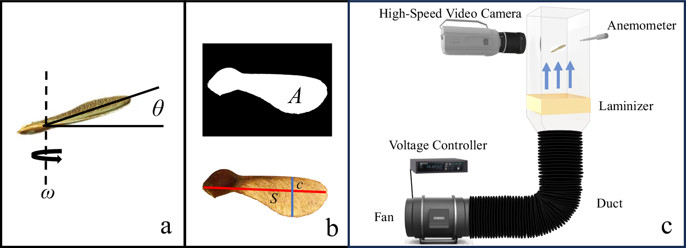

Chapter 2
How flight works
Lift, weight, balance and drag, shown with paper.
A paper plane has no engine. It falls, but it falls forwards, along a gentle slope of air. In this chapter you will find out what holds it up, what keeps it straight, and which small bends of paper change its path.
2.1 Four forces, and an engine called gravity
Four pushes and pulls act on every plane. Once a paper plane leaves your hand, it has only three of them.
Weight pulls the plane down. It is gravity acting on every bit of paper, and it never stops. Lift pushes the wings up, but a wing makes lift only while it moves through the air. Drag pulls back against the motion, like the air you feel when you wave your hand fast. Thrust pushes forwards. A big plane gets its thrust from engines.
A paper plane gets thrust only from your arm, and only for a moment. After you let go, it has weight, lift and drag. So how does it keep moving forwards? It goes slightly downhill. Think of a ball rolling down a long, gentle slope: gravity keeps it rolling. A glider does the same in the air. It gives up a little height every second and turns that height into speed. Gravity is its engine.
In a steady glide the three forces cancel out. Lift and drag together hold up exactly the weight, so the speed stays the same while the plane slides down its invisible slope. When something changes, such as a gust or a bent wing, the forces stop cancelling. The plane speeds up, slows down or turns until they balance again.
Drag comes in three kinds that matter to a paper plane. Skin friction is the air rubbing along the paper. Form drag is the air shoved aside by the plane’s shape, so thick folds and a blunt nose cost more. Induced drag is the price of lift: air curls round each wingtip in a tiny whirlwind, and that swirl tugs the plane back.
That is why a good glide looks so calm. Nothing is pushing the plane. It is falling forwards, slowly, and the shape of its wings decides how steep the slope is.
2.2 How a wing makes lift
A wing pushes air down. The air pushes the wing up.
Hold a flat hand out in a strong breeze and tilt its front edge up a little. You feel your hand being lifted. That tilt is the angle of attack: the angle between the wing and the air coming towards it.
A paper wing is almost flat, so the angle of attack does most of the work. The tilted wing turns the passing air slightly downwards, and the air pushes back on the wing. At the same time the pressure under the wing rises a little and the pressure above it drops. Scientists describe lift in both ways, as air being turned and as a difference in pressure. They are two descriptions of the same flow, and both are right.
A curved wing, like a bird’s, turns the air more easily, so it makes the same lift at a smaller angle. Some paper folds add a gentle curve for this reason.
More tilt makes more lift, up to a point. Tilt the wing too far and the air can no longer follow its top surface. It breaks away in swirls, lift falls and drag jumps. This is a stall. A stalling paper plane noses up, slows down and drops.
You may read that the air over a wing must meet the air from underneath at the back edge, so it has to hurry over the longer top. Nothing makes the two meet. In fact the air over the top arrives first. Use the turning and pressure explanations instead.
2.3 Balance: where the weight sits
Balance your plane on one finger. That spot is its balance point, and it decides how the plane flies.
Every plane has a balance point, which scientists call the centre of gravity. It is the place where the plane balances on a fingertip with its nose and tail level. The plane’s whole weight acts as if it were gathered there.
The wings have a point of their own. The push of the air acts as if gathered at one place, the centre of pressure. It is slippery: it slides back and forth as the angle of attack changes. So engineers use a steadier point instead. When the angle of attack changes, the extra lift acts at the neutral point. On a flat wing it sits about a quarter of the way back from the front edge, and a tail moves it further back.
A plane flies steadily only when its balance point is ahead of its neutral point. Then, if a gust lifts the nose, the extra lift pushes behind the balance point and swings the nose back down. If the balance point is behind the neutral point, the extra lift swings the nose further up. The plane swoops, stalls or tumbles.
That is why so many paper planes wear a paper clip on the nose. The clip is weight in front, so it moves the balance point forwards. Too much weight in front is a problem too: the plane dives, unless you bend the back edges up to hold the nose level.
Researchers at New York University tested thin plates with their weight in different places. The plates glided steadily when the weight sat roughly halfway between the middle and the front edge. With the weight further back they tumbled, and further forwards they dived.
2.4 Stability: the V, the sweep and the tail
Look at your plane from behind. Wings that rise in a shallow V help it level itself.
A stable plane returns to its path after a bump. Sooner or later a gust will tip it, so the shape of the plane has to put it right without your help.
A plane can turn three ways about its balance point. Pitch is the nose bobbing up or down. Roll is one wing dipping. Yaw is the nose swinging left or right. The V steadies the roll, and the tail steadies pitch and yaw.
The V, which engineers call dihedral, steadies the roll. When one wing drops, the plane starts to slide sideways towards the low wing. The low wing then meets the air at a larger angle and makes more lift than the high one, so the plane rolls back to level. With flat wings nothing pushes back, and a small roll can grow into a spiral.
Too much V brings a different problem. The plane overcorrects and rocks from wing to wing. Most paper planes fly best with a shallow V, with the tips a little higher than the body.
Sweep, wings that slope backwards like an arrowhead, has a similar levelling effect. It also puts the wingtips behind the balance point, where they work a little like a tail.
A tail steadies a plane the way feathers steady an arrow. The flat tail stops the nose from bobbing, and the upright fin keeps the nose pointing into the airflow. Most paper darts have no separate tail. The back of the wing does the tail’s work, the body hanging underneath acts as a fin, and turned-up wingtips add two small fins more.
2.5 Trim: small bends, big changes
Trimming means making small changes to how a plane flies. One millimetre of paper can turn a dive into a glide.
A new plane rarely flies well on its first throw. That is normal. Trimming is how you tune it: bend an edge, launch, watch, and bend again.
The back edges of the wings are the controls. Bend both back edges up a little and the air pushes the tail down, so the nose rises. This is called up-elevator, and it cures most dives. Bend them down and the nose drops.
Why does a plane swoop, stall and then dive? Too much up-elevator holds the nose high. The plane climbs and slows until its wing passes the stalling angle. Lift collapses, the nose drops, and the plane dives to win back speed. With speed back, the bent edges lift the nose again, and round it goes. Good trim finds the bend where the plane settles at one calm speed.
Bend the back edge of one wing up and the plane turns towards that side. If it turns left, bend the back edge of the right wing up 1 mm.
Check the shape before you bend anything. Look from behind: are both wings the same, and both tips the same height? A twisted wing or a lopsided V steers the plane before any trim does.
Change one thing at a time, by a millimetre or two, and launch the same way each time. Otherwise you cannot tell which change did what.
| If it… | Why | Try this |
|---|---|---|
| Dives into the floor | The nose is too heavy, or the back edges point down. | Bend both back edges up 1 mm. Repeat if it still dives. |
| Swoops up, stops, then drops | Too much up-elevator, or a throw that is too hard. | Flatten the back edges a little and throw more gently. Then try a clip on the nose. |
| Turns left | The two sides do not match. | Match the wings and tips. Then bend the right back edge up 1 mm. |
| Turns right | The two sides do not match. | Match the wings and tips. Then bend the left back edge up 1 mm. |
| Rolls over and spirals down | Too little V. | Raise both wingtips to the same height. |
| Rocks from side to side | Too much V. | Flatten the V a little. |
What to try. These fixes follow how paper gliders behave. Each plate has its own table, and none has been tested on this book’s designs yet.
2.6 When a fold goes wrong
Every builder makes a crooked fold. Many bad flights start there, so check the folds before you trim.
A crease in the wrong place: flatten it under a heavy book and fold again beside it. Paper remembers, so the old line will always pull a little.
Wings that do not match: set the plane on a table and compare the tips from behind. A twisted wing or a lopsided V steers the plane before any bend at the back does.
A torn tab or a soft nose: a 1 cm piece of tape fixes it, but write the change in your log. If the sheet is tired and limp, print a new one. A fresh sheet is part of a fair test.
| If it… | Why | Try this |
|---|---|---|
| Turns the same way every time | One wing, tip or side of the V is folded differently. | Match both sides from behind. Then bend up the back edge on the outside of the turn 1 mm. |
| Rolls over and spirals down | The tips are at different heights, or the V is flat. | Lift both tips to the same height. |
| Swerves or drops a wing at once | The front edge is twisted. | Sight along the front edge and flatten it before you bend anything else. |
| Flutters or opens in flight | The body fold has gone soft. | Crease the body fold hard again. |
| Dives into the floor | The back edges were folded down. | Bend both back edges up 1 mm. |
What to try. These fixes come from the trim tables for each design. None has been tested on this book’s designs yet.
2.7 Glide: going far or staying up
A glider is always going downhill. How gently it goes downhill decides how far it flies.
Watch a good glide from the side. The plane slides down a straight, shallow slope. The glide ratio tells you how shallow: it is the distance the plane travels forwards for each metre of height it loses. A glide ratio of 5 means 5 metres forwards for every metre down.
The glide ratio equals the lift divided by the drag. Long, smooth wings with little drag give a high ratio. A top sailplane, with wings 26.5 m from tip to tip, glides about 60 m for every metre it sinks25. Let go from the top of a 30 m tower, it could glide 1.8 km, about seventeen football pitches estimate. A carefully built card glider, tested in a wind tunnel in Japan, managed about 926. The Space Shuttle came home from orbit as a glider. On its final approach it dropped down a slope of 18 to 20 degrees, only about 3 m forwards for each metre down estimate27. Nobody has measured the glide ratio of the designs in this book yet.
Sink rate is something else: how fast the plane comes down, in metres per second. A slow plane can sink slowly even with a modest glide ratio. So there are two kinds of good glide. For distance you want the flattest slope. For time in the air you want the slowest sink, which usually means flying a little slower than for the flattest slope.
Height is stored energy. A plane launched from higher up has more to spend, so with the same glide ratio it flies further and longer. A throw aimed upwards turns the speed of your arm into height, and the plane can then spend that height slowly. Chapter 9 shows how far people have taken this.
2.8 Paper is a material
Paper has a weight, a stiffness and a grain. Choosing the sheet is part of the design.
Paper is sold by its weight per square metre, written g/m². Office paper is usually 80 g/m². The butterflies in this book use 120 g/m², and thin card is about 160 g/m². An A4 sheet of 80 g/m² paper weighs 5 g.
Heavier paper is thicker, and thickness makes paper much stiffer: a sheet twice as thick is about eight times as hard to bend. Stiff wings keep their shape when the air pushes on them. But every extra gram must be carried, so a heavier plane has to fly faster.
Paper also has a grain. When paper is made, most of its fibres line up in one direction, and the sheet is roughly twice as stiff along the grain as across it. Wings that run along the grain bend less. Folds stiffen paper too: a crease turns a flat sheet into a beam, like the ridges inside corrugated card.
We learned this the hard way. On 24 November 2026 our designer folded the first paper butterfly with a folded body, which we call K1, on small and larger sheets. It looked right but glided badly. The wings bent too much and felt disconnected from the head. That was one person’s observation, not a recorded test. Our model then suggested why: on thin paper, a wing that size bends a long way at the tip under its own lift. The next version, K2, moved to 120 g/m² paper with the wings along the grain, and it did not fly well in the founder’s tries either. The current version, K3, sweeps the wings back like a paper dart and doubles their front edges to stiffen them. Chapter 5 tells the rest; no K3 flight has been recorded yet.
2.9 Spinning and rings
Not everything that flies looks like a plane. A maple seed spins as it falls, and a ring of paper glides.

A maple seed has one wing with a heavy seed at its root. As it falls it tips over and starts to spin, like the blade of a helicopter. This is called autorotation. The spinning wing meets the air at an angle, makes lift and slows the fall, which gives the wind time to carry the seed away from its tree.
Scientists have filmed real seeds and large models of them. Each spinning wing carries a small whirl of air along its front edge, and that whirl helps it make more lift than a wing that simply fell flat.
The maple spinner in Chapter 6, plate F2, borrows the idea: one paper wing with a clip at its root. Where the clip sits changes how it spins.
A ring wing is a wing bent into a circle. The ring glider, plate F1, is one sheet folded into a loop with a thick rim at the front. The heavy rim moves the balance point forwards, and the curved sides work as wings and tail at once. Some rings are thrown with a spin, which steadies them in the way it keeps a spinning top upright.
John Collins’s Tube is a well-known spinning ring, shown in one of his WIRED videos. We link to it rather than copy it.
2.10 Thick air: why size matters
To a small, slow paper plane, air feels thicker and stickier than it does to an airliner. Insects fly in that same thick air.
Air is slightly sticky. Wave a spoon through honey and you feel stickiness win. Swing a bat through air and you feel only the air’s weight being shoved aside. Every flying thing feels both, in a mix that depends on its size and speed.
Engineers sum up the mix in one number, the Reynolds number: the speed times the size, divided by how sticky the air is. A big number means the air acts heavy and slippery. A small number means it acts thick and gluey21.
For a paper plane gliding at 3–6 m/s with wings 5–20 cm deep, the Reynolds number is roughly 10,000 to 80,000 estimate. A paper glider in a Japanese wind tunnel flew at about 12,00026. Flying insects live between about 10 and 10,00029. An airliner’s wing in cruise is in the tens of millions estimate. On this scale a paper plane sits right next to the biggest insects, and a very long way from the jets.
That gap is why paper planes do not copy airliners. At low Reynolds numbers a thin wing that is flat or gently curved, with a sharp front edge, works well, and the thick, rounded wing sections of big aircraft lose their advantage.
A paper plane is not a scale model either. Its paper is far thinner, for its size, than any aircraft’s skin and frame, so it carries very little weight on each square metre of wing. That is what lets it fly so slowly, and why a draught in the room matters so much.
This is also why every number in this book carries a state. Physics and models give estimates. Only a launch recorded with its paper, its trim and its conditions gives a measurement.